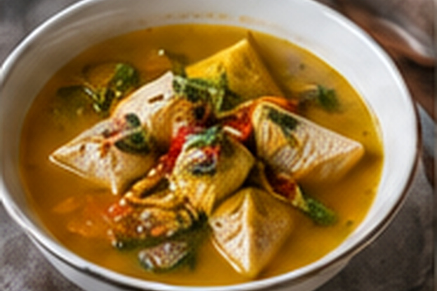

Assamese Masor Tenga
A clean, light fish curry built around sourness rather than richness.

About this dish
Masor tenga is one of Assam's signature fish preparations. The word tenga points to the sour character of the dish, which may come from tomato, lemon, thekera, elephant apple, roselle or other regional souring ingredients. This version uses tomato and lemon for accessibility while keeping the broth deliberately light.
The fish is seared briefly before it returns to the broth. That small step helps it hold together while the sour liquid finishes cooking it.
Fish and sourness at the heart of an Assamese meal
Assam Tourism describes fish as central to everyday Assamese meals and calls masor tenga an indispensable sour fish preparation, especially welcome in hot weather. The state's culinary guide lists multiple souring agents—tomato, lemon, thekera, elephant apple, roselle, raw mango and others—showing that the identity of the dish rests in the bright sour finish rather than one mandatory ingredient.
That flexibility is useful for a home cook outside Assam: the goal is not to force a hard-to-find substitute, but to understand what the souring ingredient is doing to the broth.
This tomato-and-lemon version is an accessible adaptation. Regional Assamese versions may use very different sour fruits, fish and tempering spices.
Preparation notes
Cod, snapper, haddock or another firm white fish is easier to sear and return to the broth without breaking apart.
Fresh lemon loses brightness with prolonged boiling. Add it after the heat is off and adjust gradually.
This is not meant to reduce into a thick gravy. The finished liquid should remain spoonable and refreshing.
Ingredients & detailed method
Ingredients
- 1 1/2 lb firm white fish, cut into large pieces
- 1 tsp turmeric, divided
- 1 tsp kosher salt, divided
- 2 tbsp mustard oil or neutral oil
- 1 tsp mustard seeds
- 2 ripe tomatoes, chopped
- 2 cups water
- 1–2 tbsp fresh lemon juice, to taste
- 2 green chiles, slit lengthwise
- Fresh cilantro, for serving
Method
- 1.Dry the fish. Pat it thoroughly with paper towels, then season with half the turmeric and half the salt. Rest 10 minutes.
- 2.Heat the oil. Warm the oil over medium-high heat until shimmering. If using mustard oil, follow the product's cooking directions.
- 3.Sear briefly. Add fish in one layer and cook 1–2 minutes per side. Checkpoint: the exterior should look lightly golden while the center is still undercooked. Transfer to a plate.
- 4.Temper the mustard seeds. Reduce heat to medium. Add mustard seeds and let them crackle for several seconds without burning.
- 5.Cook the tomato. Add tomatoes, remaining turmeric and remaining salt. Cook 6–8 minutes, pressing with a spoon. Checkpoint: the tomatoes should collapse into a loose sauce with little raw aroma.
- 6.Make the broth. Add 2 cups water and bring to a simmer. Cook 8 minutes so the tomato flavors the liquid.
- 7.Finish the fish. Return the fish and add green chiles. Simmer very gently 5–7 minutes. Avoid vigorous stirring.
- 8.Check doneness. Checkpoint: the fish should flake under gentle pressure and be opaque through the center.
- 9.Add the sour finish. Turn off the heat. Stir in 1 tablespoon lemon juice, taste, then add more until the broth is clearly tangy but still lets the fish and tomato come through.
- 10.Serve. Garnish with cilantro and serve with plain steamed rice.